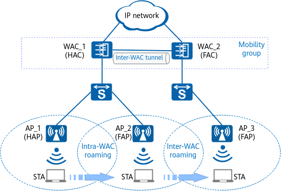

Roaming Network Structure
Figure 1 shows the roaming network structure, where WAC_1 and WAC_2 are deployed on the WLAN to manage APs. WAC_1 manages AP_1 and AP_2, and WAC_2 manages AP_3. During roaming, a STA associates with different APs as its location changes.
Figure 1 Roaming networking diagram
Roaming can be classified into the following types:
- Intra-WAC roaming: The APs associated with a STA before and after roaming are managed by the same WAC. In Figure 1, intra-WAC roaming occurs when the STA roams from AP_1 to AP_2.
- Inter-WAC roaming: The APs associated with a STA before and after roaming are managed by different WACs. In Figure 1, inter-WAC roaming occurs when the STA roams from AP_2 to AP_3.
On a WLAN, STAs cannot roam between any two WACs. To control the roaming range, the mobility group concept is introduced.
- Mobility group: STAs can roam only between WACs in the same mobility group. For example, WAC_1 and WAC_2 in Figure 1 form a mobility group.
- Inter-WAC tunnel: WACs in the same mobility group establish inter-WAC CAPWAP tunnels with each other to synchronize STA and AP information and forward packets. For example, WAC_1 and WAC_2 in Figure 1 set up a tunnel with each other.
The APs and WACs involved in STA roaming are classified into the following roles:
- Home AP (HAP): AP associated with a STA when the STA goes online for the first time. For example, AP_1 in Figure 1 is the HAP to the STA.
- Home WAC (HAC): WAC associated with a STA when the STA goes online for the first time. For example, WAC_1 in Figure 1 is the HAC to the STA.
- Foreign AP (FAP): AP associated with a STA after the STA roams. For example, AP_2 and AP_3 in Figure 1 are both the FAP to the STA.
- Foreign WAC (FAC): WAC associated with a STA after the STA roams. For example, WAC_2 in Figure 1 is the FAC to the STA.